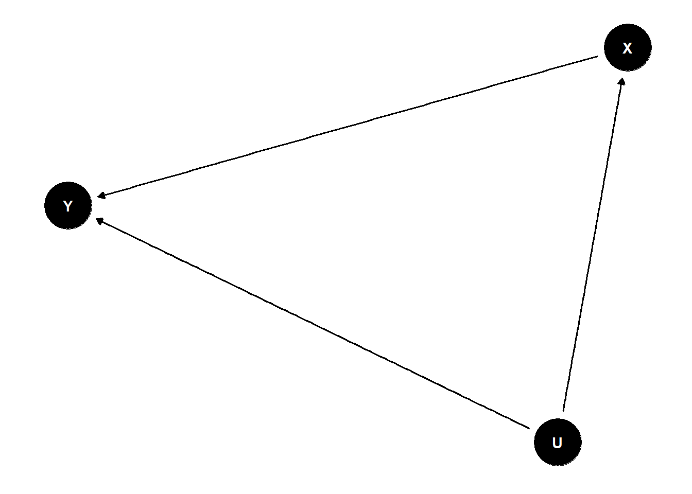

UPSTART: Universal Protocol for Silviculture TreAtment Research Trials
1 Disclaimer
The following text represents a draft and is necessarily not complete. It requires input from various forestry practitioners to guide the authors of this text with more adequate examples pertaining to forestry. The purpose of this text is to provide a for further development and discussion.
2 Introduction
The objective of this work is to provide the members of the Forest Growth Organization of Western Canada (FGrOW) with guidelines for the design and implementation of silvicultural experiments. These experimental design considerations are adaptable to the given location and scalable to the needs of the individual member.
This document is split into three main sections:
Experimental designs for silvicultural experiments
A field manual supporting the implementation of the chosen design in the field
A data dictionary that explains all terminology
3 Experimental design
In its most fundamental form, an experiment can be described as the intentional manipulation of input variables through defined treatments or interventions, resulting in a specific output or response. The objective of designed experiments is to understand cause-and-effect relationships between input and output variables using statistical models. The input variables are also referred to as predictor or independent variables, while the output variables are termed response or dependent variables. It is often helpful to draw a causal diagram to visualize this relationship. In Figure 1 the causal relationship of X on Y is described. The black dots represent variables and the fact that variable X causes variable Y to change is indicated by the direction of the arrow. This also means that Y cannot change the value of X.
In reality, however, there are many other possible influences on our response and predictor variables Y and X. The most prominent one, and the one we seek to control in designed experiments, are unobserved influences caused by U, such as landscape heterogeneity, environmental gradients or weather patterns in our study areas. Figure 2 illustrates this. Before implementing experiments, it is highly recommended to understand what may cause a variable to change in our experimental setting. Causal diagrams are a great way to understand the interrelationships that influence the estimation of our response variable Y and hence allowing us to account for them in the statistical model. Causal diagrams also ensure that assumptions are communicated before the experiment has started and conclusions are drawn.

There are three key principles in the design of experiments:
Randomization
Replication
Blocking
In the following sections, we will provide a brief summary of these design principles and then applying them to a more detailed hypothetical example.
3.1 Randomization
Randomization refers to the process of randomizing individuals into treatments as well as randomizing the order of the treatment application. For example, one could randomize seedlings into fertilizer treatments and the order of fertilizer treatments across study locations. The two major goals of randomization are to minimize systematic errors (bias) and to ensure independent observations, the latter being a key assumption for many statistical tests. Depending on the experiment, complete randomization might not always be feasible due to cost, time and space constraints. For most of those cases, however, there are experimental designs that can handle those situations and we will see examples later.
3.2 Replication
In order to quantify the experimental error associated for each treatment combination, one needs replicate measurements. This is important because the estimated experimental error, known as the standard error of the mean, plays a key role in statistical hypothesis testing. Another important reason why sufficient replication is required, is to gain precise estimates of the unknown population parameters from which the samples were drawn. The question as to how many replicates are sufficient depends on the research question and the design of the experiment. In general, however, aiming for 10 replicates in each treatment combination is a good start during the design stage of the experiment. Another consideration is much mortality is expected. When the experiment ends, one need to have enough samples left within each treatment group to infer meaningful results from the data. That being said, before the experiment is started, it is important to consult with a statistician or statistical expert to ensure the design is capable of informing the research questions. To quote Sir Ronald Fisher (1938)1:
To consult the statistician after an experiment is finished is often merely to ask him to conduct a post mortem examination. He can perhaps say what the experiment died of.
3.3 Blocking
The primary reason for blocking is to reduce or eliminate unmeasured variability due to topography, moisture, aspect etc. These unmeasured variables are also known as nuisance factors. Blocking accomplishes this by breaking up larger heterogeneous experimental conditions into smaller relatively homogeneous experimental conditions in which the experimental treatments are replicated. This captures the unmeasured variability and increases the precision with which comparisons among the factors of interest are made. To be effective for statistical testing, it is suggested to have a minimum of six blocks within the experiment. This is needed in order to sufficiently quantify block to block variation.
4 Example 1: Estimate the effect of thinning on diameter growth in lodgepole pine stands
4.1 Overview
Consider a scenario where we aim to understand the relationship between four thinning treatments (no thinning, 500, 1000, 2000 stems h^{-1}) and their impact on diameter growth (DBH) in lodgepole pine stands.
The initial step involves identifying the specific area of interest to which one intends to extend the findings. If the focus is on a lodgepole pine stand near Edson, the experiment’s conclusions will be applicable solely to this particular lodgepole pine stand near Edson where the thinning treatment was applied. However, if the target is the Lower Foothills natural subregion, multiple treatment plots must be established within that subregion. In order for the study results to be as unbiased as possible, the location for the treatment plots should be chosen randomly rather than “conveniently”. Admittedly, achieving this assumption in large-scale forestry operations is not always straightforward. In such cases, any decision regarding why certain plots could not be chosen randomly has to be clearly documented.
At the study location level, one can generally assume that the chosen areas are not perfectly homogeneous with respect to the growing conditions, which can lead to bias in the estimates. Bias refers to systematic error introduced into sampling or testing by selecting or encouraging one outcome or a group of outcomes over others. This can lead to distorted or inaccurate results.
One way of controlling for such unwanted effects is by randomizing treatment plots across the area of interest. If the area is small, this may be sufficient. However, in most cases when studying silvicultural interventions, the required area is quite large and contains a great amount of variability (topography, moisture, aspect, etc.). In such cases, it is recommended to replicate the randomized thinning treatments into blocks across the larger area of interest (see Section 3.3).
4.2 Randomized Complete Block Design
Suppose a decision was made to estimate the effect of thinning in lodgepole pine stands in the Lower Foothills subregion. Ten target sites have been identified, adequately representing the site diversity in the Lower Foothills subregion. Due to observed variability within the sites, thinning treatments are replicated in six blocks. Each block consists of four thinning treatments: no thinning, 500, 1000, and 2000 stems h^{-1}, applied to 500 m^2 plots. The order of the thinning treatment plots within the blocks is randomized. This experimental setup is commonly referred to as a randomized complete block design (RCBD).
In an RCBD:
Blocks: The experimental units, in this case the 500 m^2 plots, are grouped into blocks based on some relevant characteristic that is expected to affect the response variable. For example, variations in soil type or other environmental factors and gradients. If gradients are present then the blocks should be oriented perpendicular to the gradient and not parallel. For example, if we are studying the effect of soil moisture on plant growth along a gradient of elevation, arranging the experimental blocks perpendicular to the elevation gradient would allow for better control and assessment of the variation in soil moisture levels across the gradient.
Randomization: Within each block, treatments are randomly assigned to experimental units. Randomization helps to minimize the effects of confounding variables and ensures that any differences observed between treatments are likely due to the treatments themselves rather than other factors.
Completeness: Each treatment is applied to every block, ensuring that every treatment is represented in each block. This allows for direct comparison of treatments within each block, reducing the impact of variation between blocks.
Overall, an RCBD is a flexible and efficient design that allows to control for sources of variation, such as environmental factors or other potential confounding variables, thereby improving the reliability and validity of their experimental results.
5 Example 2: Estimate the effect of site preparation and vegetation management on seedling survival in cutblock reforestation
5.1 Overview
Suppose the objective is to ascertain the impact of site preparation and vegetation management, as well as their potential interaction, on white spruce seedling survival in cutblocks within the central mixedwood natural subregion. Site preparation comprises three levels: control, ripping, and mounding, while vegetation management encompasses two levels: control and herbicide application.
Similar to the previous example, it is essential to select a representative number of randomly chosen sites to ensure generalizability across the broader area of interest. Subsequently, the experimental design needs to incorporate the two treatment factors, site preparation, and herbicide application.
5.2 Split-plot design
In a strictly randomized complete block design, all treatment level combinations are randomized within each block. However, in experiments involving treatments that require heavy machinery or larger-scale application, such as bulldozing for site preparation, implementing such treatments on a small scale might not be feasible. In such cases, a different design, known as the split-plot design, can be employed.
The main difference lies in the arrangement of treatment factors. The main plot encompasses the treatment applied on the larger scale, such as site preparation, while the second treatment factor, referred to as split plots, is superimposed onto the main plot. Since the main plot treatments are confounded with the main plots themselves (i.e., not randomized across the area of interest), while the split plots are not, ideally, the more significant treatment should be assigned to the split plots if possible.
6 Statistical analyses
In the analysis of randomized complete block designs, split-plot designs, and other experimental designs characterized by spatial or temporal correlation among experimental units, linear- and generalized linear mixed effects models (LMM, GLMM) are the preferred analytical tools. Mixed-effects models, also known as hierarchical or multilevel models, are adept at handling various issues such as imbalanced designs or spatial/temporal correlation.
While the fixed effects part of these models captures the effects of primary interest, i.e., the effects one seeks to estimate, the random effects part identifies the cluster structure within which replicates are grouped. This cluster structure accounts for the correlation among observations within the same cluster, offering a more accurate representation of the underlying data structure.
Consider the previous two examples, in (Section 4), site and block are the grouping variables that include trees that are likely to behave more similarly than trees from a different site-block combination. So the random effects term in this model would be site and block since each block-site combination requires its own error estimation. A model specified in this way would account for the potential spatial dependency of trees in this particular given design.
On the other hand, in (Section 5), we also have to consider the main plot since we can assume that split-plots in a given main plot will behave more similarly compared to split-plots in the other main plots. So in this example we would have site and block as well as main plot.
Footnotes
First Session of the Indian Statistical Conference, Calcutta, 1938↩︎